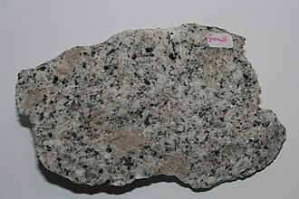
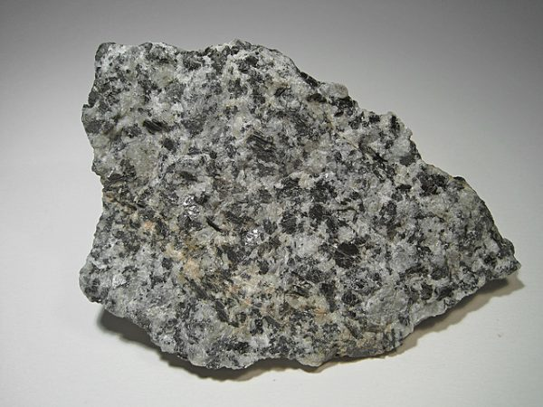
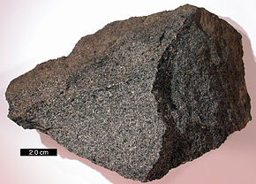
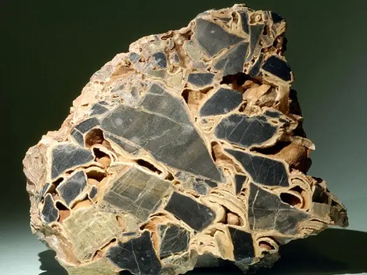
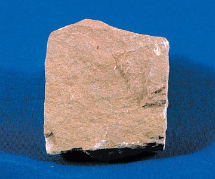
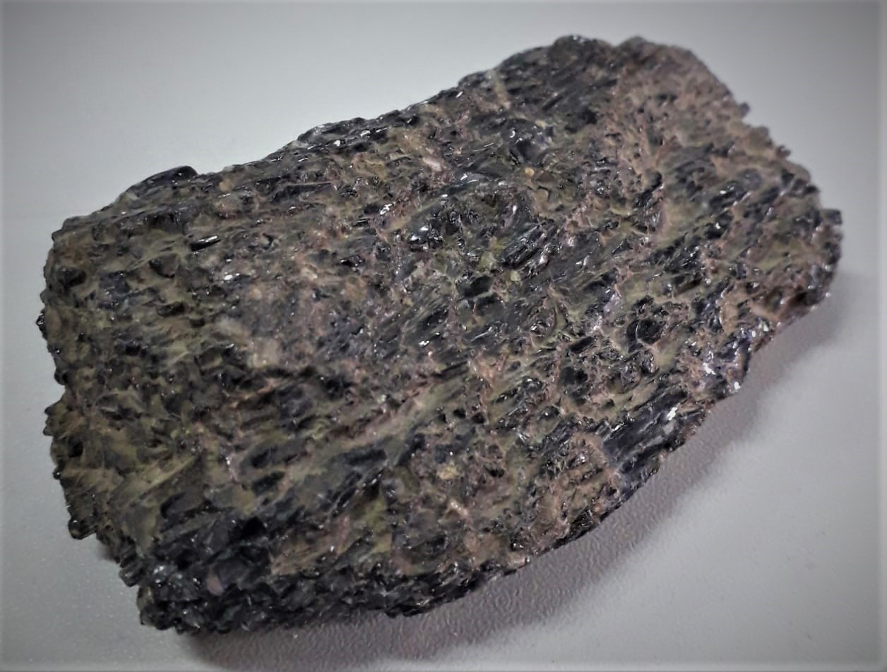
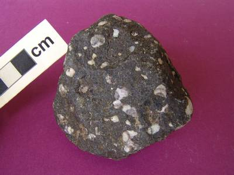

.png)
| Piedra | Descripción |
|---|---|
|

Granito ID: 01 |
Tipo: Ígnea Textura: Intermedia-gruesa Color: Gris, amarillo, rojo claro Minerales esenciales: Cuarzo, feldespato potásico y plagioclasa ID: 01 |
|

Granodiorita ID: 02 |
Tipo: Ígnea Textura: Fino-gruesa Color: Gris, blanco, rosado Minerales esenciales: Cuarzo, feldespatos ID: 02 |
 Sienita
SienitaID: 03 |
Tipo: Ígnea Textura: Intermedio, Grueso Color: Blanquizco con café brillante, gris rosáceo Minerales esenciales: Ortoclasa, plagioclasa, auguita y magnetita ID: 03 |
 Monzonita
MonzonitaID: 04 |
Tipo: Ígnea Textura: Fanerítica Color: Rosa con tonalidades blancas y negras Minerales esenciales: Cuarzo, Feldespato, Plagioclasa ID: 04 |
 Diorita
DioritaID: 05 |
Tipo: Ígnea Textura: Intermedio, Grueso Color: Blanco-negro o levemente gris-verde Minerales esenciales: Plagioclasa sódica, Biotita, Anfíbol, Piroxeno, Cuarzo ID: 05 |
|

Gabro ID: 06 |
Tipo: Ígnea Textura: Intermedio, Grueso Color: Verde oscuro a negro Minerales esenciales: Plagioclasa cálcica, Piroxeno, Olivino, Hornblenda, Hiperstena ID: 06 |
 Dunita
DunitaID: 07 |
Tipo: Ígnea Textura: Intermedio, Grueso Color: Verde oscuro a negro Minerales esenciales: Olivino, piroxenos y anfíboles ID: 07 |
 Conglomerado
ConglomeradoID: 08 |
Tipo: Sedimentaria Textura: Grueso Color: Negro, gris, marrón Minerales esenciales: granito, cuarcita y andesita ID: 08 |
|

Brecha ID: 09 |
Tipo: Sedimentaria Textura: Irregular Color: Variable Minerales esenciales: clastos, brecha de guijas o gránulo ID: 09 |
 Arenisca
AreniscaID: 10 |
Tipo: Sedimentaria Textura: Intermedio-grueso Color: Variable, comúnmente gris, café o rojo Minerales esenciales: Arenisca, cuarzo o feldespato ID: 10 |
 Arcosa
ArcosaID: 11 |
Tipo: Sedimentaria Textura: Detrítica Color: Rosado, rojo, amarillo Minerales esenciales: cuarzo y minerales de feldespatos ID: 11 |
 Grauvaca
GrauvacaID: 12 |
Tipo: Sedimentaria Textura: Detrítica Color: Negros, gises Minerales esenciales: Cuarzo , feldespato, roca o líticos ID: 12 |
|

Limolita ID: 13 |
Tipo: Sedimentaria Textura: Fina Color: Gris, rojo, verde Minerales esenciales: Hematita, goetita y ferrihidrita ID: 13 |
|

Anfibolita ID: 14 |
Tipo: Metamórfica Textura: Intermedio-Grueso Color: Verdes, marrones o negros Minerales esenciales: anfíbol, cuarzo, clinopiroxeno, granate. ID: 14 |
 Corneana
CorneanaID: 15 |
Tipo: Metamórfica Textura: Granoblastica-masiva Color: Gris oscuro con tonalidades marrones y verdes Minerales esenciales: Cuarzo, granates, epidota, biotita, sericita, clorita, grafito. ID: 15 |
 Cuarcita
CuarcitaID: 16 |
Tipo: Metamórfica Textura: Intermedio-Grueso Color: Blanco, gris, rosado o rojizo Minerales esenciales: Cuarzo ID: 16 |
 Eclogita
EclogitaID: 17 |
Tipo: Metamórfica Textura: Intermedio-Grueso Color: Blanco, verde, gris, rosado o rojizo Minerales esenciales: Granate, Piroxeno ID: 17 |
|

Espilita ID: 18 |
Tipo: Metamórfica Textura: Suave-Grueso Color: Gris, Verde Minerales esenciales: Albita, Clorita, Calcita ID: 18 |
 Esquisito
EsquisitoID: 19 |
Tipo: Metamórfica Textura: Esquistosa Color: Verde, café, rojizo Minerales esenciales: mica, clorita, talco, hornblenda ID: 19 |